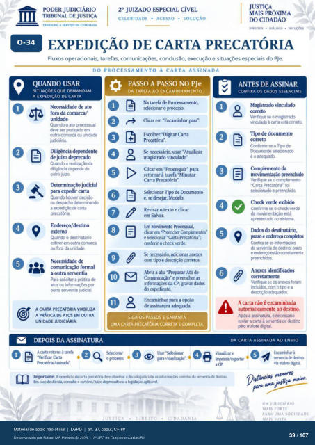

Transcrição automática em português, ainda não revisada. Confira grafia, prazos e termos jurídicos na imagem e no PDF antes de utilizar.
TRABALHO A SERVIÇO DA CIDADANIA
CELERIDADE • ACESSO • SOLUÇÃO
m•nros • • sotuçOrs
EXPEDIÇÃO DE CARTA PRECATÓRIA
Fluxos operacionais, tarefas, comunicações. conclusão, execução e situações especiais do PJe.
DO PROCESSAMENTO Á CARTA ASSINADA
O de
09
QUANDO USAR
SITUAÇÕES QUE DEMANDAM
A EXPEDIÇÃO DE CARTA
fora da comarca/ Quando o ato
deve ser praticado em Outra comarca Ou unid±
Diligência dgmdente Quando a da
diligência de outro juizo.
judicial Quando houver
Ou despzho deter rnhando a carta
precatória. Endereço/destino
Quando 0 destinatário estiver em outra comarca
ou fora da unidade. comunic$) formal
a outra serventia Para solicitar a prática
atos ou outra ser•anua judicial.
11
PASSO A PASSO NO PJe
DA TAREFA AO ENCAMINHAMENTO
Na tarefa de Prcxessamento, Clicar em "Encaminhar para".
Escolher "Digitar Carta Se necessário, usar "Atualizar
magistrado vinculado". Clicar em para
retcrnar à tarefa "Minutar Carta Precatória".
Tip de e, se desejar, Mcxielo.
Revisar o texto e clicar em Salvar.
Em Movimento Prtxessual, clicar em "Preenclrr
e selecionar "Carta Precatória": conferir o check verde.
Se necessário, adicionar anexos com tip e corretos.
Abrir a aba "Preparar Ato de Comunicação- e preencher as
informaçüs da CP. gravar dados do
Encaminhar para a de assinatura adequada
SIGA OS PASSOS E GARANTA
A CARTA PRECATÓRIA VIABILIZA
A PRÁTICA DE ATOS EM OUTRA
UNIDADE JUDICIÁRIA.
DEPOIS DA ASSINATURA
A carta retorna à tarefa -Verifwar Carta
Precat&ia Assmada-.
UMA CARTA PRECATÓRIA CORRETA E COMPLETA.
para visualizaçõ Imprtante: A exFdiçü:» da carta vecat&ia a judicial e as corretas da senentia
Em ca*) dúvida. ccnsune o cartório/juizo a aplkável
ANTES DE ASSINAR
CONFIRA OS DADOS ESSENCIAIS
Magstradovinculado Verifique se 0
à carta está corretQ Tip de d«xumento
Confirrne se 0 Tip de é o adeqm).
Complemento da movimentação preenchido
Verifique se o complenwlto "Carta Precat&ia" foi
e Confirrne se 0 check verde
da movimentaçào está apresentado no sistema
Dados do prazo e errkreço cor*os
Confira se as da serventia destro, prazo
e esta ctxretarnente Anexos identificados
corretamente Verifique se os anexos foram
incluídos, o tim e a descrição adeqndos.
A carta não é encaminhada automaticamente ao destino.
Ams a assinatura. é necessário enviar a carta à serventia de destirx)
malote digital.
DA CARTA ASSINADA AO ENVIO
va múte
UM JUDICIÁRIO
MAIS FORTE
PARA UMA SOCIEDADE
Ver também o infográfico original (página 39)
